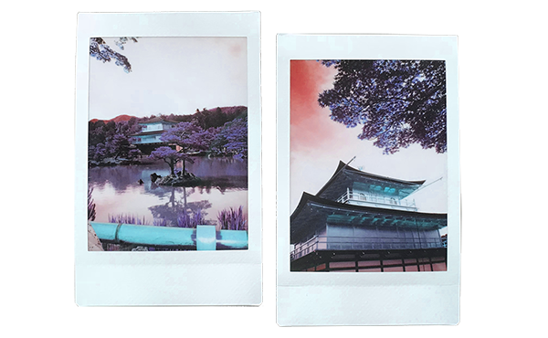
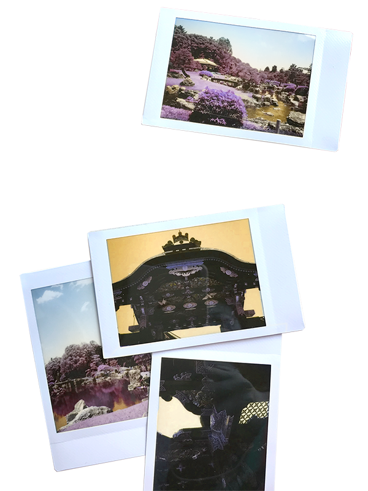

May 22, 2018
There is some kind of stillness you can only feel on your own, submerged in hot water, soaking in milk, in the quiet, in the grace of night, so far away from what you’ve known and all you ever knew. To swallow the world into your body—to stand in it and to stand by it—to take it in and to hold it close. When you travel alone you are the only thing that feels familiar.
Lion Cafe has indeed proved to be what Daniel called, “transformative”. It instilled in me a love I had never known—the love of classical music, the love of something so church-like and grandiose. A cathedral in which you faced yourself in all of the silence, in all of the sound that stirred and trembled inside your body.

But when I think back on the days I spent in Japan I am filled with a silent something—I think back on walking through Daikanyama before anything had opened. Walking through the neighborhood in which I stayed with winding and empty roads that all ended up at the same train station. How eerie and artificial it felt to walk through streets lined with architectural masterpieces that housed luxury brands, that I had once only seen in images on a screen, separated from everything else entirely.
The incongruence, the lack of cohesion between the buildings that first stunned you then confused you and their surroundings of a quiet, slow rumbling city mirrored something in me as well: a disconnect, maybe. An attempt to construct something so beautiful in isolation, as if those things could exist in a vacuum and be beautiful every time you looked at them. As if they would stay the same anywhere—just as magnificent, just as ruthless. And they would never feel out of place, because they were never meant to feel in place to begin with. As if they could never be tethered to anything at all, and this was the way it was intended to be. It was something like the American Radiator Building and its dominance by obscurity, by the confusion of reality—a great imposition of things placed in places they don’t belong.
But what was it about them that made it less grand than it was, as if I had stumbled upon a replica of the original? A tired derivative of something once seen oceans away. Like an Eiffel Tower in Nevada. The Prada store felt the same. Cafes in sweet Kyoto, sun-soaked, charming—had such an odd sense of unreal to them. As if they were planted here, as they were anywhere else in the world. This must be to some degree what the ‘Airbnb effect' is—the globally found ‘hipster’, Brooklyn, Ikea, Swedish, Japanese, handcrafted, artisanal aesthetic found in countries around the world. I could have been anywhere else, I could have been home.
As I walked along the route inside the Imperial Palace I thought to myself how much it felt like Chinatown—not the space itself but the feeling of being a tourist, a foreigner—to have experiences made for you. A path for you to take, crowds to be ushered in and out of. Tourism takes on such an empty feeling of voyeurism—one that feels so lacking and so, for lack of a better word, inauthentic. When places are created for you they lose a sense of history; indeed it is the exact preservation of history that allows for that weight to slip away, replaced by the shuffling of weight from elsewhere, here to consume something else.
The most I felt to a sense of history was the tactile feeling of the floor beneath my feet, and the sound of the chirping of birds the floorboards made from the structures of nails underneath. Beyond that I felt like I was walking through a vacant building; void of reality, void of a past. Where did it go? How does one coexist with the preservation of the past, without it vanishing the moment you try to hold it?
It feels like some kind of Disneyworld, with cartoonish representations of what something must be, because Japan exists in endless variants already in the Western world. When you experience the derivative first, the original feels already seen. The original feels like a duplicate in itself. What is that feeling? To visit something in all its authenticity only to feel like you have seen it already, in fleeting moments elsewhere—and the experience then feels already tainted? Even tea ceremonies felt like imitation, degrees removed from itself, performative—given to tourists to consume a culture marked Other. Do I shame white people who partake in such activities? Do I shame tourism in general, preferring to read in an empty restaurant to feel less foreign in the spectacle that is Tourist Japan? In the spectacle that is the fabrication of a life created for Westerners. The youth of Japan gather in Western fast food chains while tourists seek traditional rituals that feel most like Origin. The fetishization is two-fold. The most authentically Japanese seems to be worship of the West, and the most Western, the exoticism of the Oriental.
There were so many moments like this in Japan: the feeling of having come across something fake, something created for foreigners, designed for the non-Japanese. Something so far removed from what would have been the original, that exists elsewhere in the world, where things are more real and more true. It was like the real Japan was somewhere else, still another plane ride away, in which direction, I didn’t know. But where I existed was some kind of simulated Japan: the clean sidewalks that felt virtual and engineered, as if someone had just decided to build them that morning. The city streets with the tall buildings that lined either side, unnatural, orchestrated. The golden temple, the imperial palace.
There is nothing true or real about an experience that was created for you, and capitalized off a history curated to tell a narrative in contrast to yours.
The now still silence has bettered the garden infinitely. How beautiful things become when there isn't a crowding and coveting of a natural space. I would live in this garden forever if I could.
♥
